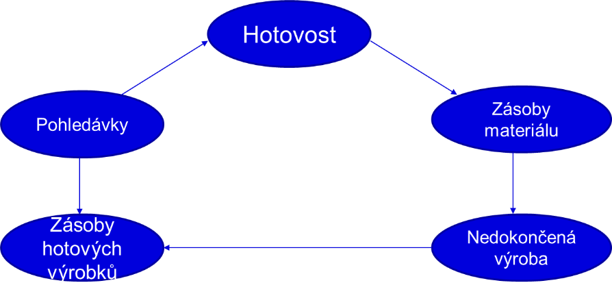

6 Finanční management
Studijní materiály
- Dahlquist, J. R., &; Knight, R. (2022). Principles of finance. OpenStax, Rice University. https://openstax.org/details/books/principles-finance
- Chapter 2 - Corporate Structure and Governance
- Chapter 6 - Measures of Financial Health
- Chapter 17 - How Firms Raise Capital
- Chapter 19 - The Importance of Trade Credit and Working Capital in Planning
- RůČKOVÁ, P. (2011). Finanční analýza–4. rozšířené vydání. Grada Publishing as.
Výstupy z učení:
- Porozumět pojmům finanční analýza, ekonomická a účetní analýza.
- Znát metody finanční analýzy a základní poměrové ukazatele.
- Porozumět struktuře výkazu zisků a ztráty, rozvahy a výkazu cash flow.
- Porozumět hotovostnímu cyklu a definovat optimální objem pracovního kapitálu.
- Definovat způsoby krátkodobého financování podniku.
- Umět vyčíslit průměrné vážené náklady na kapitál.
6.1 Finanční analýza
Finanční analýza je klíčovým nástrojem finančního řízení podniku. Umožňuje vyhodnotit ekonomickou výkonnost podniku a kvantifikovat finanční dopady jeho činnosti. Současně poskytuje informace o silných a slabých stránkách firmy, na jejichž základě lze učinit odpovídající opatření. Tím usnadňuje rozhodování jak v krátkodobém horizontu v rámci operativního řízení, tak i v dlouhodobém horizontu při realizaci strategických cílů.
Finanční analýza zahrnuje několik klíčových oblastí:
- Analýza odvětví – Každé odvětví vykazuje rozdílnou citlivost na ekonomický cyklus, ať už se jedná o odvětví cyklická, neutrální nebo anticyklická.
- Analýza firem – Zaměřuje se na aktuální stav podniku a jeho předpokládaný vývoj. Provádí se jak kvalitativní analýza (např. kvalita managementu, úroveň řízení, likvidita akcií, ekologie), tak kvantitativní analýza (např. z účetních výkazů společnosti).
Cílem finanční analýzy je zhodnotit několik aspektů podniku:
- Schopnost vytvářet hodnotu pro vlastníky a akcionáře.
- Solventnost a likviditu z pohledu věřitelů.
Ačkoli jsou pohledy vlastníků a věřitelů různé, technika provedení finanční analýzy zůstává stejná. Účelem je poskytnout komplexní vyhodnocení současné i budoucí situace podniku.
6.1.1 Ekonomická analýza
Ekonomická analýza se zaměřuje na několik klíčových faktorů, které ovlivňují podnik:
- Odvětví a obor činnosti – Analyzují se rizika daného odvětví, globální trendy a specifika trhu.
- Operační rizika – Hodnocení rizik spojených s dodavateli, odběrateli a konkurenty.
- Trhy a produkty – Zaměření na produktové portfolio, konkurenční výhody a tržní postavení.
- Technologie – Potřeba investic do nových technologií.
- Riziko země – Politická, ekonomická, regulatorní a měnová rizika.
- Management a personální politika – Zkušenosti, organizace a přístup k riziku.
6.1.2 Účetní analýza
K provedení finanční analýzy se využívají různé účetní výkazy a další dokumenty:
- Rozvaha
- Výkaz zisku a ztráty
- Výkaz cash flow (přehled o peněžních tocích)
- Přehled o změnách vlastního kapitálu
- Příloha účetní závěrky
- Výroční zprávy podniku
6.2 Metody finanční analýzy
Metody finanční analýzy lze rozdělit na tři základní typy:
- Analýza absolutních ukazatelů
- Analýza rozdílových ukazatelů
- Analýza poměrových ukazatelů
6.2.1 Analýza absolutních ukazatelů
Tato metoda vychází z dat jednotlivých účetních výkazů, zkoumá jejich výši, strukturu a vývoj v čase. Slouží jako prvotní seznámení se situací analyzované společnosti. Absolutní ukazatele se analyzují dvěma způsoby:
Horizontální analýza – Analyzuje změny absolutních hodnot účetních výkazů v čase a vyjadřuje je procentuálně. Tato metoda ukazuje trend vývoje ukazatelů a umožňuje predikovat budoucí vývoj.
Vertikální analýza – Rozkládá souhrnné položky na jednotlivé části a zjišťuje, jak se jednotlivé položky podílejí na celku. Procentuálně vyjadřuje jednotlivé položky např. v bilanční sumě rozvahy nebo tržbách ve výkazu zisku a ztráty.
6.2.2 Analýza rozdílových ukazatelů
Rozdílové ukazatele slouží především k řízení likvidity. Mezi nejdůležitější patří:
- Čistý pracovní kapitál (ČPK)
- Čisté pohotové prostředky
- Čistý peněžně-pohledávkový finanční fond
6.2.3 Analýza poměrových ukazatelů
Poměrové ukazatele umožňují rychlé a spolehlivé hodnocení hospodaření podniku. Vyjadřují podíl dvou položek účetních výkazů a využívají veřejně dostupná data, čímž jsou vhodné pro srovnání s konkurencí.
Hlavní skupiny poměrových ukazatelů:
- Ukazatele ziskovosti a rentability
- Ukazatele likvidity
- Ukazatele zadluženosti
- Ukazatele aktivity
6.3 Základní finanční ukazatele
6.3.1 Ukazatele ziskovosti a rentability
- Čistý zisk (EAT, Earning After Taxes): Ukazatel čistého zisku podniku po odečtení všech daní.
- Zisk před zdaněním (EBT, Earning Before Taxes): Vyjadřuje zisk před odečtením daní, což umožňuje posoudit provozní výkonnost podniku bez vlivu daňových opatření.
- Zisk před úroky a zdaněním (EBIT, Earning Before Interests and Taxes): Zohledňuje provozní výsledek podniku před úroky a daněmi.
- Zisk před úroky, zdaněním a odpisy (EBITDA, Earning Before Interests, Taxes, Depreciation and Amortization): Ukazuje zisk podniku bez vlivu nákladů na financování, zdanění a odpisy.
Rentabilita celkového kapitálu – ROA (Return On Assets)
Hodnotí výkonnost podniku bez ohledu na zdroje financování jeho majetku. Vyjadřuje celkovou efektivnost a produkční sílu podniku. \[ \text{ROA} = \frac{\text{EBIT}}{\text{Aktiva}} \times 100 \]
Rentabilita vlastního kapitálu – ROE (Return On Equity)
Klíčový ukazatel pro vlastníky (akcionáře), který zachycuje výnosnost jimi vloženého kapitálu. \[ \text{ROE} = \frac{\text{EAT}}{\text{Vlastní kapitál}} \times 100 \]
6.3.2 Ukazatele likvidity
Běžná likvidita (Working Capital Ratio, Current Ratio)
Udává, kolikrát je podnik schopen uspokojit své věřitele, pokud by proměnil veškerá oběžná aktiva v hotovost. \[ \text{Běžná likvidita} = \frac{\text{Oběžná aktiva}}{\text{KTD závazky}} \]
6.3.3 Ukazatele zadluženosti
Celková zadluženost (Debt Ratio)
Ukazuje podíl cizích zdrojů na celkových aktivech. \[ \text{Celková zadluženost} = \frac{\text{Cizí zdroje}}{\text{Aktiva}} \times 100 \]
Finanční páka
Vyjadřuje, jak použití cizího kapitálu zvyšuje rentabilitu vlastního kapitálu.
\[ \text{Finanční páka} = \frac{\text{Aktiva}}{\text{Vlastní kapitál}} \]
6.3.4 Ukazatele aktivity
Doba obratu zásob (Days Sales of Inventory)
Udává počet dní, po které jsou aktiva vázána ve formě zásob.
\[ \text{Doba obratu zásob} = \frac{\text{Zásoby}}{\text{Tržby}} \times 360 \]
Doba obratu pohledávek (Days Receivable Outstanding)
Ukazuje průměrnou dobu, za kterou jsou pohledávky podniku přeměněny na peněžní prostředky.
\[ \text{Doba obratu pohledávek} = \frac{\text{KTD pohledávky z obchodního styku}}{\text{Tržby}} \times 360 \]
Doba obratu závazků (Days Payable Outstanding)
Udává průměrnou dobu, za kterou podnik uhradí své závazky.
\[ \text{Doba obratu závazků} = \frac{\text{KTD závazky z obchodního styku}}{\text{Tržby}} \times 360 \]
6.4 Pracovní kapitál, krátkodobé financování podniku, struktura a náklady kapitálu
Podnikové výkony (tržby) vytvářejí toky plateb, které určují nezbytnou kapitálovou potřebu podniku.
Řízení pracovního kapitálu zahrnuje dva hlavní přístupy:
- Interní financování: Samofinancování ze zisku, odpisů, rezerv a prostředků uvolněných rychlejším obratem kapitálu.
- Externí financování: Financování z vlastních zdrojů (vlastníci, akcionáři) a z cizích zdrojů (úvěry, leasing, faktoring).

Hotovostní cyklus trvá 70 dní, což znamená, že po tuto dobu je hotovost vázána ve výrobním procesu.
6.4.1 Řízení pracovního kapitálu
Řízení pracovního kapitálu se soustředí na klíčové oblasti:
Zásoby: Objem zásob (materiál, výrobky, nedokončená výroba) závisí na dodávkách od dodavatelů a odběrech do výroby. Snahou je minimalizovat zásoby prostřednictvím dodávek “just in time”.
Pohledávky: Odklad splatnosti je konkurenční nástroj, ale přináší riziko nedobytných pohledávek.
Peněžní prostředky a krátkodobé finanční majetky (KFM): Peněžní prostředky stojí na začátku hotovostního cyklu a slouží k zajištění bezpečnostní likvidity. Časový nesoulad příjmů a výdajů vyžaduje přiměřené investiční a finanční plánování.
Závazky: Odklad splatnosti (např. dodavatelský úvěr) snižuje potřebu hotovosti a představuje významný zdroj financování pracovního kapitálu.
6.4.2 Optimální objem pracovního kapitálu
Při řízení pracovního kapitálu je nutné zohlednit následující otázky:
- Jaká je optimální úroveň pracovního kapitálu k udržení výkonnosti podniku?
- Jaká úroveň pracovního kapitálu zajistí nejvyšší tvorbu hodnoty pro vlastníky?
- Jak lze snížit úroveň pracovního kapitálu bez ohrožení ziskovosti a výkonů?
Čistý pracovní kapitál (ČPK) tvoří bezpečnostní marži, která chrání podnik před nenadálými riziky a umožňuje zachovat provoz i v nepředvídatelných situacích. Zahrnuje zásoby materiálu, rozpracované výroby, hotových výrobků a tzv. obchodní deficit, tedy rozdíl mezi dobou splatnosti pohledávek a závazků.
- Na základě těchto údajů je možné stanovit délku obratového cyklu (peníze \(\rightarrow\) zásoby \(\rightarrow\) zboží \(\rightarrow\) peníze).
- Obratový cyklus (OC) peněz je vypočítán jako:
\[ \text{OC} = \text{DOZAS} + \text{DOP} - \text{DOZ} \]
- \(\text{DOZAS} \dots\) doba obratu zásob
- \(\text{DOP} \dots\) doba obratu pohledávek
- \(\text{DOZ} \dots\) doba obratu závazků
Příklad
Zásoby jsou nakoupeny ihned za hotové, výroba trvá 7 dní, hotové výrobky jsou prodány se splatností 20 dnů. Materiál v hodnotě 100 000 Kč je zaplacen hotově, což znamená, že podnik potřebuje mít tuto částku k dispozici po dobu 27 dní.
Pokud by byl materiál odebrán na fakturu se splatností 15 dnů, doba vázání prostředků by se snížila na 12 dní (7 + 20 - 15 = 12).
Délka obratového cyklu je klíčová – čím delší, tím větší je potřeba financování.
Průměrné prostředky musí pokrýt průměrné denní výdaje. Výši potřebných prostředků stanovíme na základě součinu délky obratového cyklu peněz a průměrných denních nákladů (\(\emptyset DN\)).
\[ \text{Potřebné prostředky} = \text{délka OC} \times \emptyset DN \]
Pokud podnik není schopen odhadnout průměrné denní výdaje, je možné je stanovit jako: celkové roční výdaje (náklady) / 360.
Příklad
Pokud jsou zásoby vázány ve výrobě 10 dní, průměrná doba inkasa pohledávek činí 50 dní a doba splatnosti závazků je 20 dní, průměrné denní výdaje jsou 2611,10 Kč. Délka obratového cyklu je:
\[ OC = 10 + 50 - 20 = 40 \text{ dní} \]
Potřebné prostředky:
\[ 40 \times 2611,10 = 104 444 \text{ Kč} \]
Příklad
Stanovte obratový cyklus podniku, je-li splatnost faktury za materiál 30 dní, doba výroby 10 dní a splatnost odběratelských faktur 15 dní.
6.5 Krátkodobé financování podniku
Krátkodobé financování zajišťuje likviditu podniku a pokrývá běžné provozní náklady. Existují různé typy financování v závislosti na potřebách podniku.
Běžné financování: Používá se pro pokrytí běžného provozu podniku, jako jsou náklady na materiál, energie, mzdy, nájemné a splácení závazků.
Mimořádné financování: Zajišťuje prostředky pro specifické situace:
- Zakládání podniku (nákup strojů, pozemků, budov, rozjezd podnikání)
- Rozšiřování podniku nebo jeho aktivit
- Financování ozdravného procesu podniku
6.5.1 Vlastní zdroje financování
- Nerozdělený zisk, rezervy, odpisy
- Vklady vlastníků do základního kapitálu
- Zvýšení základního kapitálu (emise akcií, private equity, venture capital, business angels, dary)
6.5.2 Cizí zdroje financování
Úvěry
Obchodní úvěr: Odběratel získává úvěr tím, že platí za dodávky zboží nebo služeb až po sjednané lhůtě, což snižuje dobu, po kterou jsou jeho prostředky vázány. Dodavatel může nabídnout skonto, což je sleva za dřívější platbu.
Kontokorentní úvěr: Umožňuje automatické čerpání úvěru při přechodu účtu do debetu.
Revolvingový úvěr: Opakovaně čerpatelný úvěr, který je poskytován na úvěrovém účtu, umožňující flexibilní splácení a čerpání.
Leasing
Finanční leasing: Uživatel o majetek pečuje jako o vlastní a může jej po určité době odkoupit.
Operativní leasing: Uživatel majetek pouze využívá, přičemž servis a údržbu zajišťuje leasingová společnost.
Dluhopisy
Dluhopis představuje právo věřitele (držitele dluhopisu) na splacení dlužné částky emitentem a na výnos. Existují různé typy dluhopisů:
- Dluhopis s fixním výnosem
- Dluhopis s nulovým kuponem (zero coupon bond), prodávaný s diskontem
- Dluhopis s variabilním kuponem
- Věčný dluhopis (bez termínu splatnosti)
- Vypověditelný dluhopis (s rizikem předčasného splacení)
- Prašivý dluhopis (junk bond)
Pozor na kreditní (úvěrové) riziko!
6.6 Náklady kapitálu
Kapitálové náklady rozdělujeme na:
- Náklady cizího kapitálu – Cena požadovaná věřitelem za poskytnutí kapitálu (úrok) je ovlivněna rizikem, které věřitel podstupuje.
- Náklady vlastního kapitálu – Očekávaná výnosnost vlastního kapitálu závisí na vnímaném riziku a srovnatelné alternativě.
6.6.1 Náklady na cizí kapitál
Vzorec pro výpočet nákladů na cizí kapitál:
\[ \text{NCK} = (1 - t) \times i \]
- \(\text{NCK} \dots\) náklady na cizí kapitál
- \(t \dots\) daňová sazba
- \(i \dots\) úroková míra
Nákladové úroky jsou daňově uznatelným nákladem a snižují daňový základ podniku (daňový štít). Daňový štít má plný efekt pouze tehdy, pokud je EBIT (zisk před úroky a daněmi) alespoň tak velký jako úrokové náklady.
Příklad
Společnost si vypůjčí 2 mil. Kč, úroková míra je 7,5 % a daňová sazba 19 %. Vypočítejte náklady cizího kapitálu při zohlednění daňového štítu.
6.6.2 Náklady na vlastní kapitál
Vlastníci očekávají výnosnost kapitálu, která by měla být srovnatelná s alternativními investicemi. Odhad nákladů na vlastní kapitál lze provést pomocí modelu CAPM (Capital Asset Pricing Model) nebo na základě následujícího vzorce:
\[ \text{KE} = \left(\frac{\text{Dividenda}}{\text{Tržní cena akcie}}\right) + \text{Míra růstu dividend} \]
- \(KE \dots\) požadovaná procentní výnosnost vlastního kapitálu
- Za účelem optimalizace nákladů na kapitál se vyčíslují tzv. vážené průměrné náklady na kapitál.
6.6.3 Průměrné vážené náklady kapitálu
Průměrné vážené náklady kapitálu (Weighted Average Cost of Capital – WACC) se počítají takto:
\[ \text{WACC} = \frac{D}{D + E} \times \text{NCK} + \frac{E}{D + E} \times \text{KE} \]
- \(D \dots\) cizí kapitál (dluhy)
- \(E \dots\) vlastní kapitál
- \(NCK \dots\) náklady na cizí kapitál
- \(KE \dots\) náklady na vlastní kapitál
Příklad
Celkový kapitál podniku je 150 mil. Kč, zadluženost je 50 %, úroková míra činí 8 %, daňová sazba je 19 %. Tržní cena akcie je 450 Kč, dividenda na akcii 52 Kč a očekávaný růst dividend 2 % ročně. Vypočítejte náklady cizího kapitálu, náklady vlastního kapitálu a WACC.
Příklad
Celkový kapitál podniku činí 42 mil. Kč, dluh 14 mil. Kč, úroková míra je 10 %, daňová sazba 19 %. Dividenda na akcii je 8 Kč, tržní cena akcie 100 Kč, růst dividend 2 % ročně.
- a) Vypočítejte WACC.
- b) Vypočítejte WACC při zvýšení dluhu na 50 % celkového kapitálu.
- c) Vypočítejte WACC při zadluženosti 60 %, kdy se úroková míra i požadovaná míra dividend zvýší o 2 %.
6.7 Příklady k procvičení
- Obchodní společnost si vypůjčí 2 mil. Kč. Úroková míra je 7,5%, daňová sazba je 19%. Vypočítejte náklady cizího kapitálu, které na firmu dopadnou při využití tzv. úrokového daňového štítu.
Výsledek
6%
- Obchodní společnost si vypůjčí 2 mil. Kč, které na konci účetního období vynesou 2,2 mil. Kč. Úroková míra je 12%, daňová sazba 19%. Vypočítejte náklady cizího kapitálu, které na firmu dopadnou při využití tzv. úrokového daňového štítu.
Výsledek
9,72%
- Obchodní společnost si vypůjčí 1 mil. Kč. Úroková míra je 8,5%, aktuální daňová sazba je 19%. Vypočítejte náklady cizího kapitálu, které na firmu opravdu dopadnou při využití úrokového daňového štítu, a kolik ušetří společnost na daních?
Výsledek
Skutečný náklad na úvěr je 6,9%, společnost na daních ušetří 1,6%, tj. 16 000,- Kč
- Celkový kapitál firmy je 150 mil. Kč. Zadlužení této firmy 50%, úroková míra 8%, aktuální daňová sazba 19%. Tržní cena akcie je 450 Kč, dividenda na akcii činí 52 Kč, počítá se s růstem dividend o 2% ročně. Vypočítejte náklady cizího kapitálu, náklady vlastního kapitálu a WACC tohoto podniku.
Výsledek
Náklady cizího kapitálu 6,48% = 4 860 000,- Kč, náklady vlastního kapitálu 13,55% = 10 162 500,- Kč, WACC 10% = 15 000 000,- Kč
- Celkový kapitál firmy je 250 mil. Kč. Zadlužení 40%, úroková míra 8%, aktuální daňová sazba 19%, tržní cena akcie 1250,- Kč, dividenda na akcii 130 Kč, počítá se s růstem dividend o 2% ročně. Vypočítejte náklady cizího kapitálu, náklady vlastního kapitálu a WACC tohoto podniku.
Výsledek
Náklady cizího kapitálu 6,48% = 6 480 000 Kč, náklady vlastního kapitálu 12,4% = 18 600 000 Kč, WACC 10,032% = 25 080 000 Kč
- Celkový kapitál firmy je oceněn na 42 mil. Kč, dluh činí 14 mil. Kč, úroková míra je 10%, daňová sazba je 19%. Dividenda na akcii v tržní ceně 100 Kč činí 8 Kč, počítá se s růstem dividend 2% ročně. Vypočítejte WACC:
- pro zadané hodnoty
- při zvýšení dluhu na 50 % celkového kapitálu
- pro zadluženost 60 %, při níž se zvýší úroková míra i požadovaná míra dividend o 2 %
Výsledek
- 9,3%
- 9,05%
- 10,632%
- Celkový kapitál firmy je 50 mil. Kč. Zadlužení této firmy je 20 mil. Kč, úroková míra 8%, aktuální daňová sazba 19%. Tržní cena akcie je 100 Kč, dividenda na akcii činí 6 Kč, počítá se s růstem dividend o 1,5% ročně. Vypočítejte WACC
- pro zadané hodnoty
- při zvýšení dluhu na 50% celkového kapitálu
- pro zadluženost 60%, při níž se zvýší úroková míra i růst dividend o 2%
Výsledek
- 7,1%
- 6,99%
- 8,66%